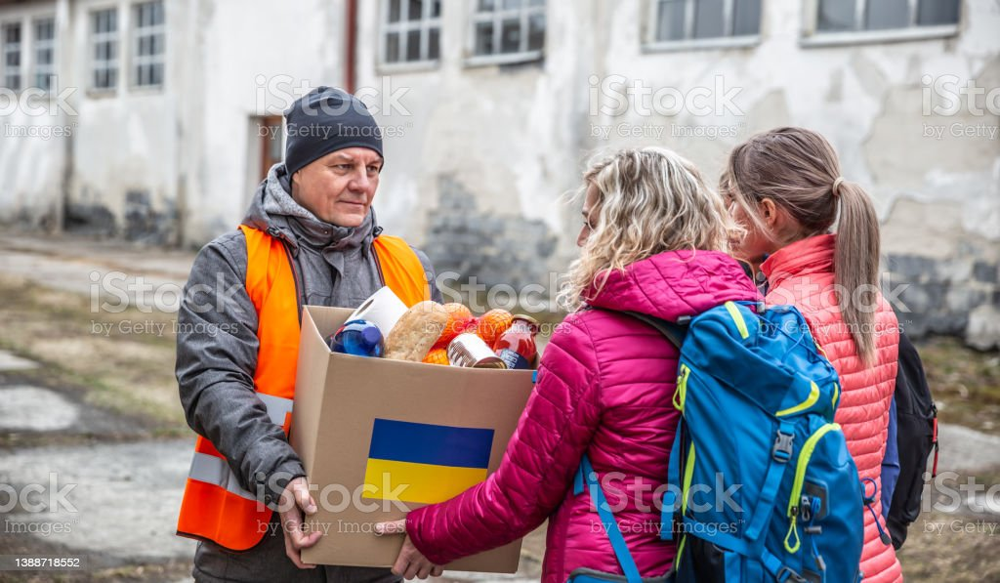

|
ORGANIZAÇÕES
|
SAIBA MAIS
|
Como se pode ajudar? |
ONG as ONGs são um tipo de entidade cada vez mais presente no dia a dia dos brasileiros. As ações do poder público, como bem sabemos, nem sempre são suficientes e, por isso, todo engajamento da sociedade civil conta. Se você tem interesse em ajudar estrangeiros refugiados, saiba que existem várias maneiras de fazer isso. Doações para organizações não governamentais (ONGs) sempre são bem-vindas, e isso inclui desde doações em dinheiro até roupas, calçados, alimentos e produtos de higiene, entre outros itens. Também vale a pena construir redes de apoio e acolhimento para ajudar os imigrantes a se ajustarem à nova realidade. Nas escolas, por exemplo, é importante que crianças e adolescentes refugiados recebam o suporte adequado para se adaptarem e que os educadores abordem o tema da imigração de modo a educar os outros alunos sobre a questão. |
|  | DOAÇÕES Outra dica que não pode faltar sobre como ajudar imigrantes é apoiar iniciativas como as do Planeta de TODOS, uma ONG brasileira que conta com o suporte do Cartão de TODOS e atua não só no Brasil, mas também em outros países, como Grécia e Itália. Para que você entenda como isso faz diferença, destacamos, a seguir, alguns dos trabalhos realizados por essa organização. As doações mensais ajudam o ACNUR a acolher milhões de famílias nos campos de refugiados e nos centros urbanos, atendendo suas necessidades básicas de alimentação, saúde, moradia, educação, água potável e saneamento básico. Sua contribuição mensal é fundamental para a sobrevivência e continuidade dos sonhos destas famílias. Dentro do próprio site da ACNUR, existem lugares para doações afim de ajudar os refugiados. |